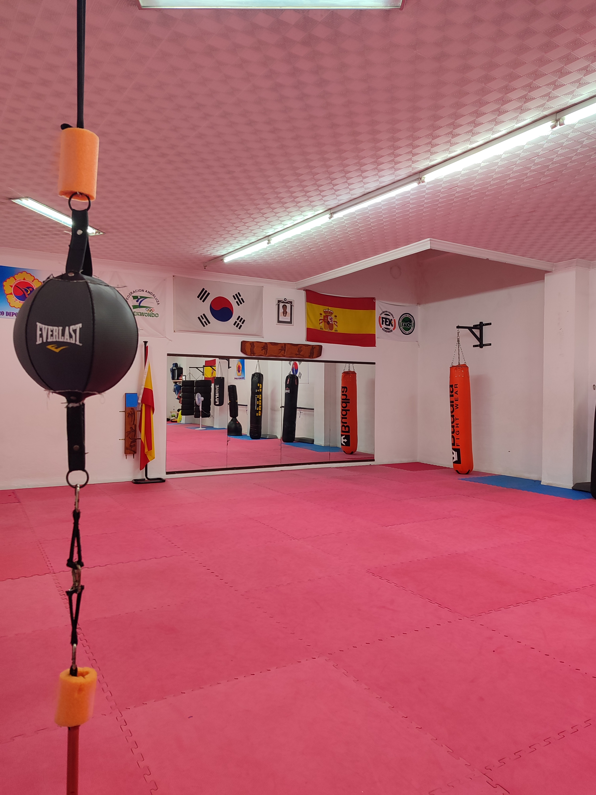
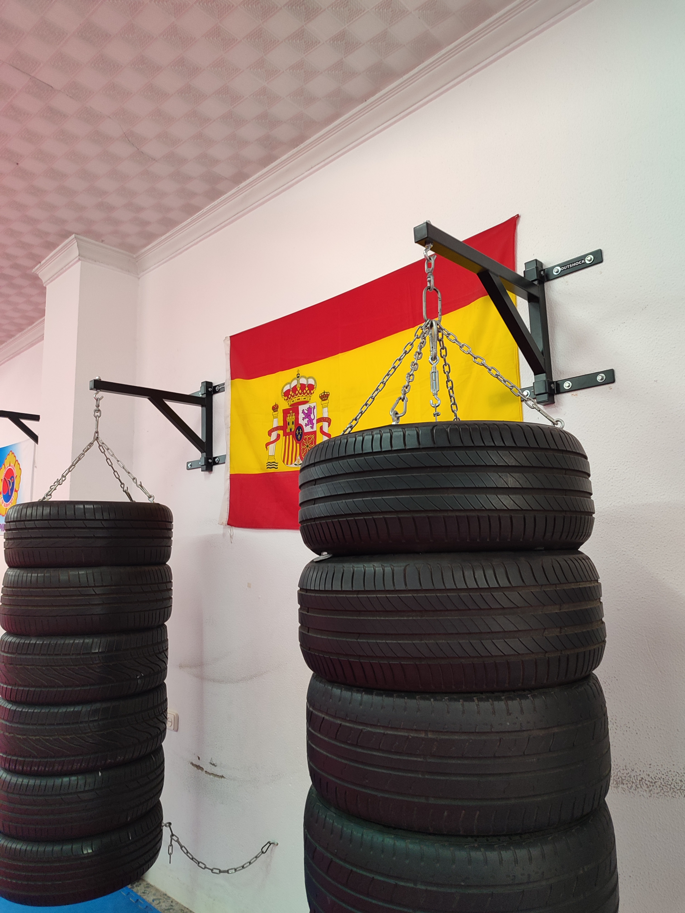
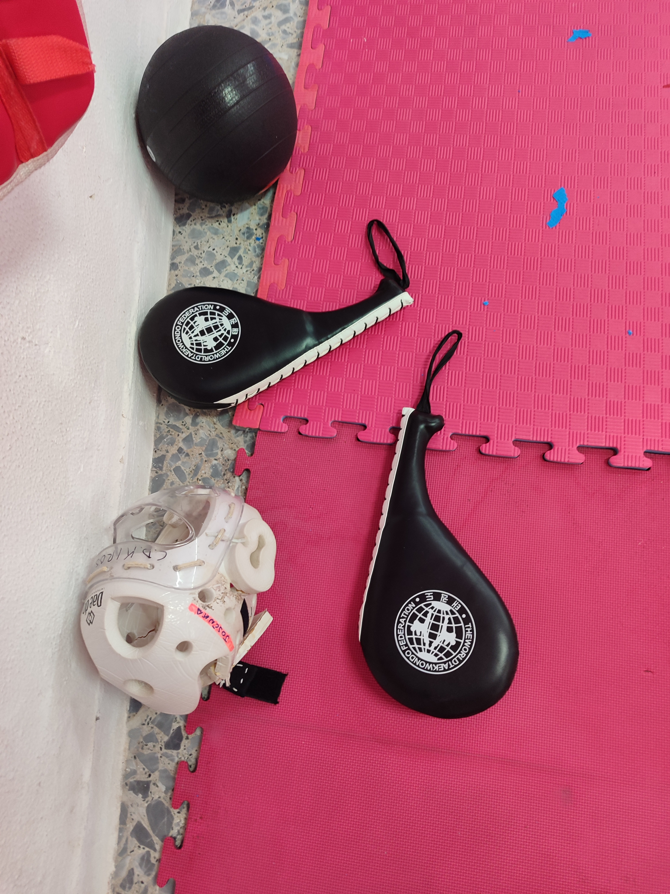

Conoce todas nuestras clases y encuentra la que mejor se adapta a ti.
En Kirosport ofrecemos diferentes disciplinas adaptadas a cada edad y nivel, además de contar con un espacio adaptado para la práctica de artes marciales, ofreciendo un entorno seguro y adecuado para el entrenamiento.
Durante más de una década hemos formado a alumnos de todas las edades, acompañándolos en su evolución tanto dentro como fuera del tatami. Creemos en una enseñanza basada en el esfuerzo, la humildad y la disciplina, pilares fundamentales del Taekwondo tradicional. Al mismo tiempo, hemos incorporado el enfoque del deporte moderno, participando en el ámbito federado y ampliando horizontes para nuestros alumnos.
Disponemos de zona de entrenamiento, material específico y un ambiente cómodo para alumnos y familias.


